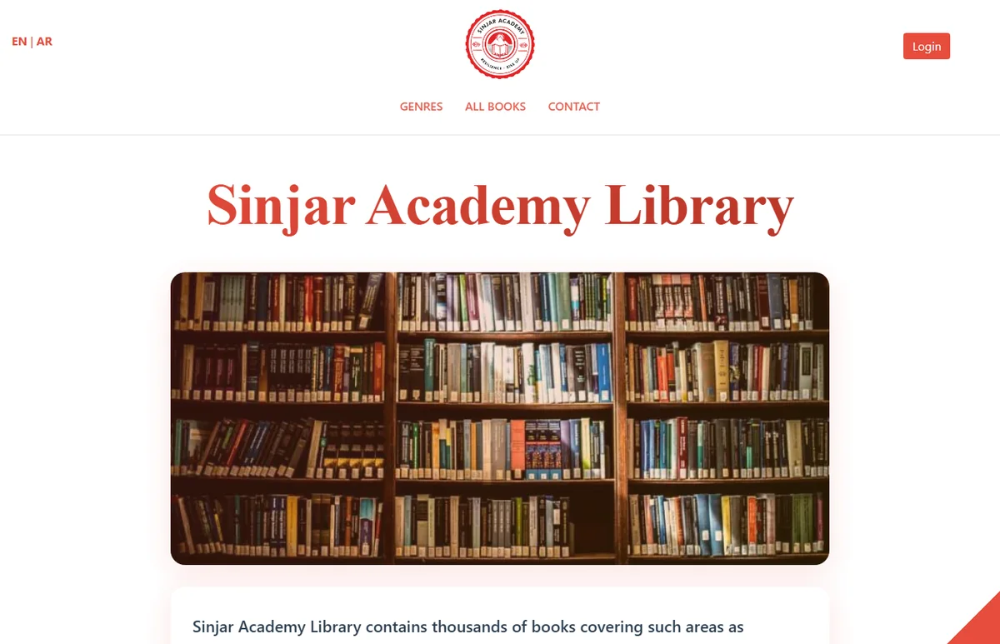
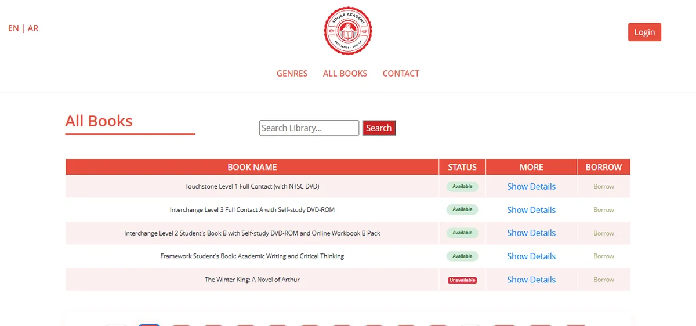
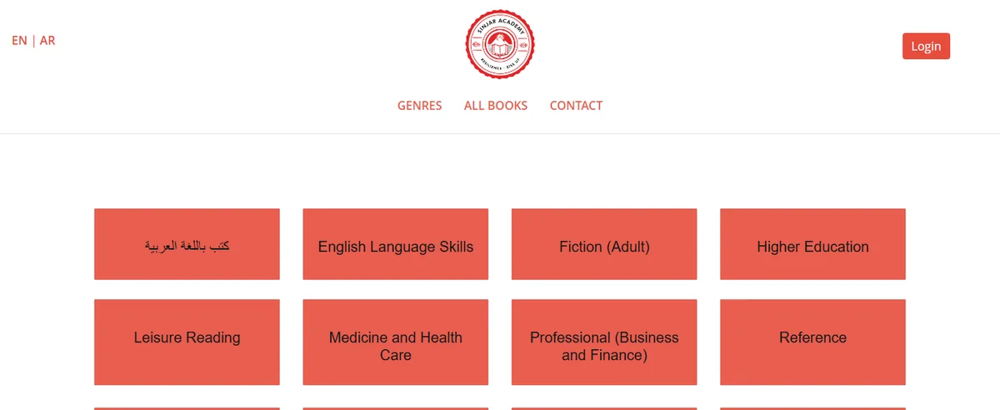
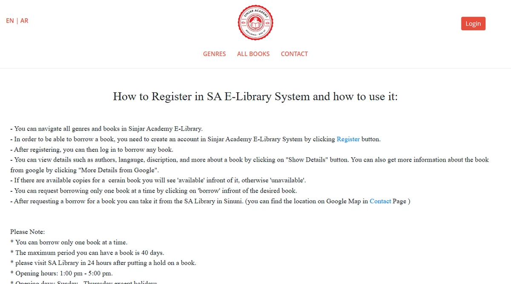
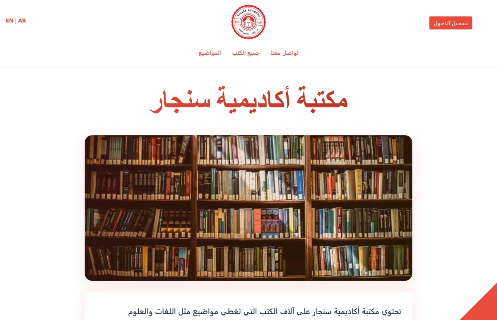
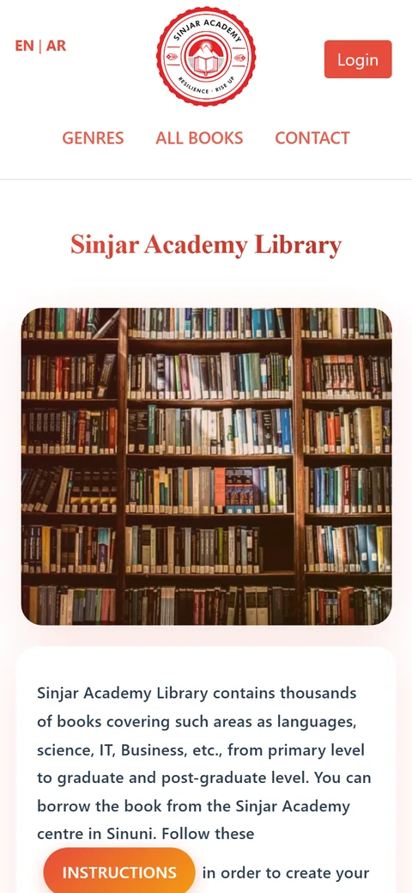
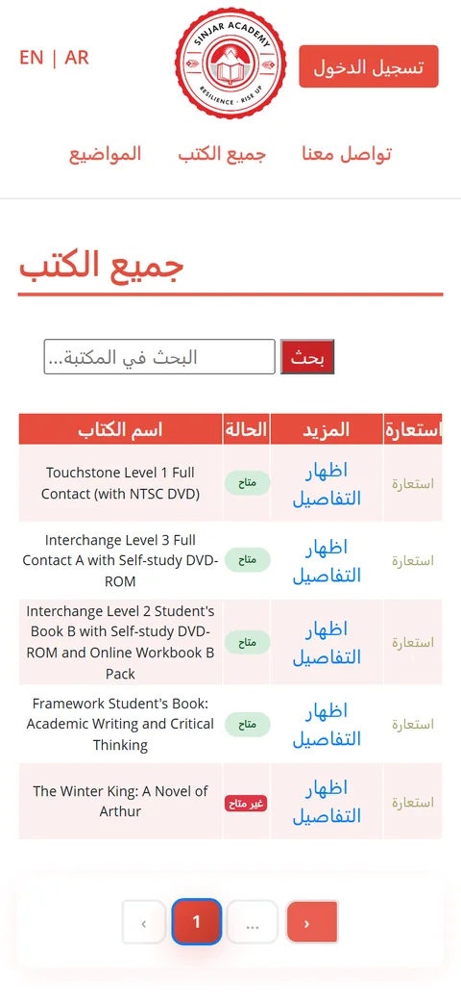

Online catalogue & borrowing
The online library of Sinjar Academy: readers search thousands of books, see which ones are available, and request to borrow them, then collect the book from the Academy's centre in Sinuni. The whole site works in English and Arabic.







Sinjar Academy holds thousands of books, many donated by BookAid, from primary-school readers to postgraduate texts. Readers needed a way to find out what the library holds, and whether a book is free, before travelling to the centre in Sinuni.
The site had to work for readers of all ages, in English and Arabic, on phones as well as computers.